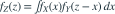

X与Y独立，，（速率1），Z=X+Y。用

求密度，在z>0时x的有效积分区间为？- A
- B 对所有z>0
- C
- D
我已思考，展开答案与解析
正确答案：A
- 第一项密度要求0<x<2，第二项密度要求z−x>0，即x<z。
- 两个条件求交集，得到0<x<min(2,z)。
- z≤0时交集为空，密度为0。
易错提醒先写支撑条件再取交集；第三个选项对应另一种积分变量的范围，不能直接放到本题x上。
考后回忆 · 条件重建 · 回忆19；卷积入门第一步
依据考试回忆重建；数字、选项和必要条件为补充设定，非原题。